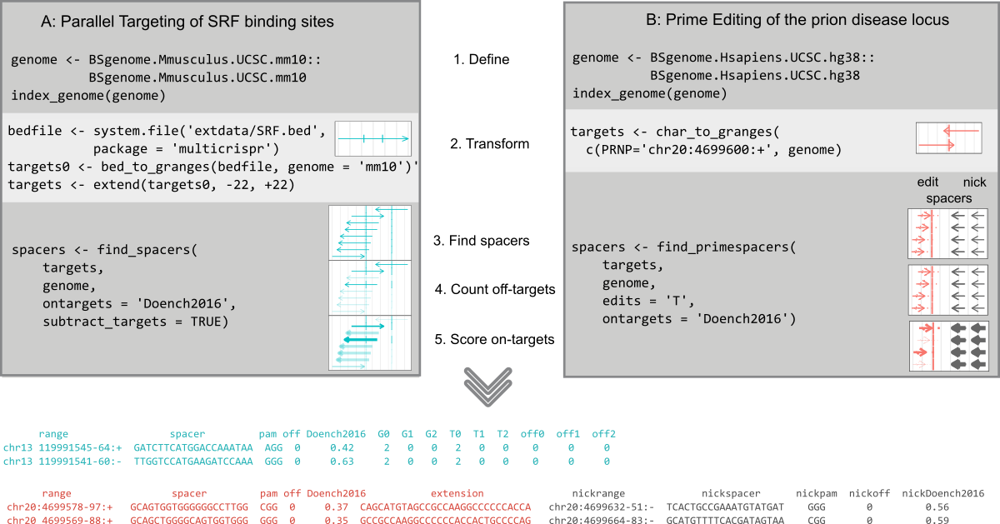
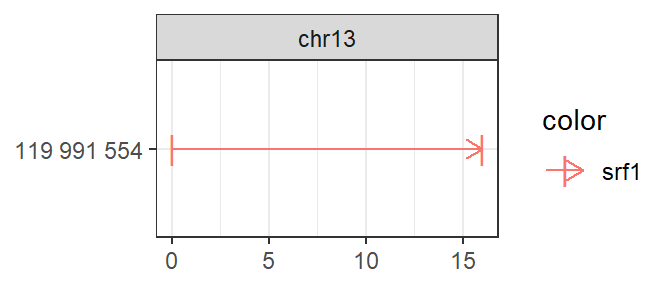
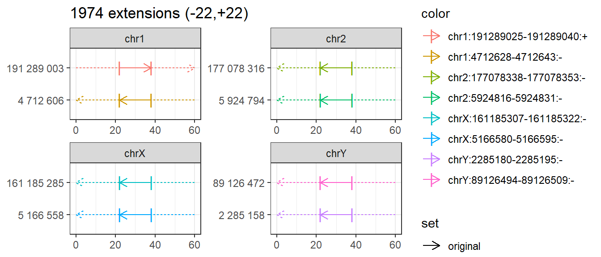
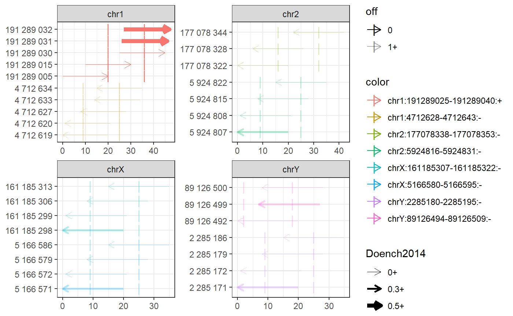

Crispr/Cas9 gRNA design
Aditya M Bhagwat
2020-09-06
crispr_grna_design.RmdBackground
Crispr/Cas9 is a two-component genome engineering tool:
- The Cas9 enzyme performs some action at a genomic locus (cuts, activates, represses, …)
- The guide RNA spacer targets a matching locus when followed by NGG “pam” sequence

Guide RNA design involves
- Defining target ranges
- Transforming them according to Crispr/Cas9 application
- Finding 20 nucleotide gRNA spacers
- which match the target sequence (on either strand) and are followed by an NGG “pam”
- have minimal off-target (mis)matches
- have maximal on-target efficiency
Multicrispr
Multicrispr aism to be a gRNA design solution which is:
- complete: defining/transforming targets, finding spacers, analysing on/off-targets
- performant: scales towards thousands of targets (data.table backend)
- intuitive: a functional programming design and intuitive visualizations
- interoperable: acceping and returning a GRanges
For on-target scoring either the Doench2014 or the Doench2016 method can be used (Doench2016 is the current standard, see e.g. Haeussler et al., 2016). For off-target analysis Bowtie (fast) as well as vcountPDict (exact) can be used. The figure below gives an overview of how multicrispr can be used, the subsequent sections below discuss the details.

Install
Installing multicrispr is straightforward:
# From BioC install.packages("BiocManager") BiocManager::install(version='devel') BiocManager::install("multicrispr") # From gitlab: #url <- 'https://gitlab.gwdg.de/loosolab/software/multicrispr.git' #remotes::install_git(url, repos = BiocManager::repositories())
Doench et al. (2016) ’s python package azimuth for on-target efficiency prediction using their method can be easily installed and activated using reticulate:
# Install once # reticulate::conda_create('azienv', 'python=2.7') # reticulate::conda_install('azienv', 'azimuth', pip = TRUE) # reticulate::conda_install('azienv', 'scikit-learn==0.17.1', pip = TRUE) # Then activate reticulate::use_condaenv('azienv')
Bowtie-indexed genomes for fast offtarget analysis can be installed using index_genome. For the two genomes used in the examples, mm10 and hg38, the function downloads pre-build indexes from our data server, allowing a quick exploration (set download=FALSE to build index anew):
index_genome(BSgenome.Mmusculus.UCSC.mm10::BSgenome.Mmusculus.UCSC.mm10) index_genome(BSgenome.Hsapiens.UCSC.hg38::BSgenome.Hsapiens.UCSC.hg38 )
Define targets
bed_to_granges converts a (0-based) BED coordinate file into a (1-based) GRanges.
An example is loading the 1974 binding sites of the transcription factor SRF:
require(magrittr) require(multicrispr) bedfile <- system.file('extdata/SRF.bed', package = 'multicrispr') targets0 <- bed_to_granges(bedfile, genome = 'mm10')

genes_to_granges and genefile_to_granges convert entrez/ensembl gene identifiers into GRanges using txdb gene models. An example that loads a small subset of the 1974 SRF binding sites:
entrezfile <- system.file('extdata/SRF.entrez', package = 'multicrispr') txdb <- TxDb.Mmusculus.UCSC.mm10.knownGene::TxDb.Mmusculus.UCSC.mm10.knownGene invisible(genefile_to_granges(entrezfile, txdb, complement = TRUE))

char_to_granges uses a 1-based coordinate vector to specify the GRanges.
It can be used e.g. to define the first SRF binding site explicitly:
bsgenome <- BSgenome.Mmusculus.UCSC.mm10::BSgenome.Mmusculus.UCSC.mm10 plot_intervals(char_to_granges(c(srf1 = 'chr13:119991554-119991569:+'), bsgenome))

Transform
As a second step, the original targets may require transformation. The functions up_flank (target upstream flanks), down_flank (downstream flanks), double_flank (double flanks) and extend can be used to update the target ranges as required.
# Up flank invisible(up_flank( targets0, -200, -1)) # Down flank invisible(down_flank( targets0, 1, 200)) # Double flank invisible(double_flank(targets0, -200, -1, +1, +200)) # Extend targets <- extend(targets0, -22, 22, plot = TRUE)

Find spacers, count off-targets, score on-targets
find_spacers finds N20 spacers (followed by NGG pam sites), counts off-targets, and scores on-targets. It also visualizes the results and returns them as a GRanges object with off-target counts and on-target efficiency.
spacers <- find_spacers( targets, bsgenome, complement=FALSE, mismatches=0, subtract_targets = TRUE)

Return/Write
The results are returned as a GRanges object. They can be written to file with write_ranges
They can be cast into a data.table with gr2dt, as shown below
str(gr2dt(spacers), vec.len=2) ## Classes 'data.table' and 'data.frame': 6616 obs. of 19 variables: ## $ seqnames : Factor w/ 66 levels "chr1","chr2",..: 1 1 1 1 1 ... ## $ start : int 4712619 4712620 4712627 4712633 4712634 ... ## $ end : int 4712638 4712639 4712646 4712652 4712653 ... ## $ width : int 20 20 20 20 20 ... ## $ strand : Factor w/ 3 levels "+","-","*": 2 2 2 2 2 ... ## $ targetname : chr "chr1:4712628-4712643:-" "chr1:4712628-4712643:-" ... ## $ targetstart : int 4712628 4712628 4712628 4712628 4712628 ... ## $ targetend : int 4712643 4712643 4712643 4712643 4712643 ... ## $ crisprname : chr "chr1:4712628-4712643:-_5" "chr1:4712628-4712643:-_4" ... ## $ crisprspacer: chr "ATATAAGGGCATTGGAAGAA" "AATATAAGGGCATTGGAAGA" ... ## $ crisprpam : chr "GGG" "AGG" ... ## $ name : chr "SRF_MA0083.3" "SRF_MA0083.3" ... ## $ score : num 10.5 10.5 ... ## $ G0 : int 7 7 7 8 1678 ... ## $ T0 : int 1 1 1 2 825 ... ## $ off : int 6 6 6 6 853 ... ## $ off0 : int 6 6 6 6 853 ... ## $ Doench2014 : num 0.16491 0.00721 ... ## $ names : chr "chr1:4712628-4712643:-_5" "chr1:4712628-4712643:-_4" ... ## - attr(*, ".internal.selfref")=<externalptr>
References
Anzalone, A.V., Randolph, P.B., Davis, J.R. et al. Search-and-replace genome editing without double-strand breaks or donor DNA. Nature 576, 149–157 (2019). https://doi.org/10.1038/s41586-019-1711-4
Doench JG, Hartenian E, Graham DB, Tothova Z, Hegde M, Smith I, Sullender M, Ebert BL, Xavier RJ, Root DE, Rational design of highly active sgRNAs for CRISPR-Cas9-mediated gene inactivation Nat Biotechnol 2014 1262-1267.
Doench JG, Fusi N, Sullender M, Hegde M, Vaimberg EW, Donovan KF, Smith I, Tothova Z, Wilen C, Orchard R, Optimized sgRNA design to maximize activity and minimize off-target effects of CRISPR-Cas9 Nat Biotechnol 2016 184-191
Haeussler M, Schönig K, Eckert H, Eschstruth A, Mianné J, Renaud J-B, Schneider-Maunoury S, Shkumatava A, Teboul L, Kent J, Evaluation of off-target and on-target scoring algorithms and integration into the guide RNA selection tool CRISPOR Genome Biol 2016 148